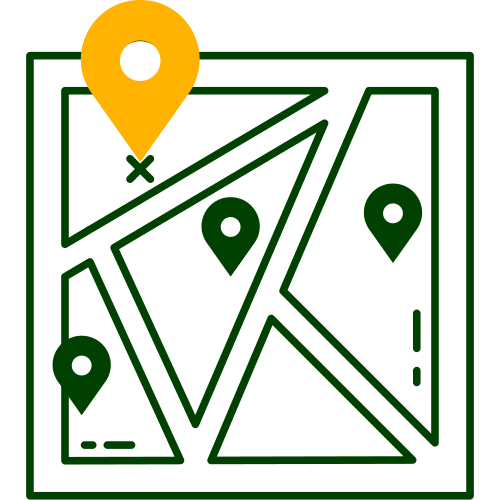
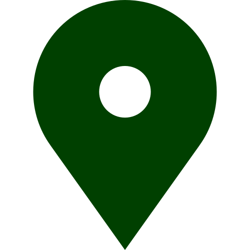
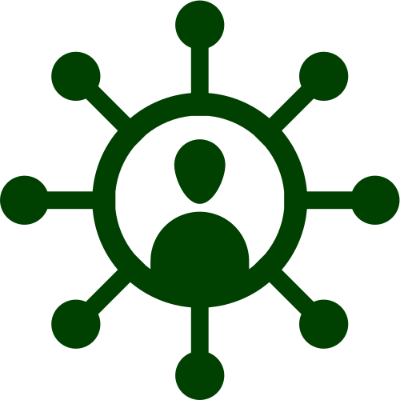

Connect with others to make healthy eating simpler and more social.
My Food Community connects you with local artisans, markets, and independent food businesses, along with supportive
in-app groups. Together they make healthy eating easier, more social, and rooted in your local community.
Your neighbourhood on your fingertips.
Discover local shops and community events.

Shop details
Shop name
Category
Price range
Contact details
Opening hours
Address
Score & reviews
Website
Local shops
Cookery workshop
Delicatessen
Bakery
Butcher
Farmers market
Artisan
Specialty grocer

My Neighbourhood
Your guide to local eating.
My Neighbourhood brings together local
businesses, markets, and artisans so you can eat
healthier while supporting the people around you.
Find independent shops, authentic flavours, local
events, and trusted community recommendations.
Try it now.
Your support network, always online.
Join online groups for cooking and health.

My Groups
Healthy living, together.
My Groups gathers food lovers, creators, and
communities so you can learn, share, and enjoy
healthier eating as a team.
Try it now.